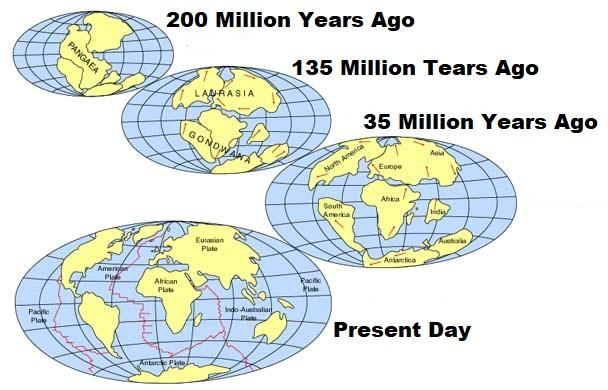
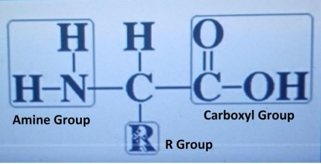

The verses indicate that the angels of destruction came from Sirius-System. The System is related to the Earth and is located about eight light-years away. However, the angels do not require eight years to reach the Earth. A passage with portals is created, and they dive into this passage by Sakinah, allowing them to arrive on Earth in a short time. Sakinah, which means 'indwelling,' refers to a 'cloud that carries a group of angels'. Some angels guard the Fortresses, but satanic jinns sometimes gain access by stealth. If the guard angels detect them, they hurl fiery asteroids at the jinns to drive them away: . ―And we reached the sky, so we found it strongly guarded and filled with asteroids.‖ [Al Quran 72:2]
আয়াতগুলি নির্দেশ করে যে ধ্বংসের ফেরেশতারা সিরিয়াস-সিস্টেম থেকে এসেছে। সিস্টেমটি পৃথিবীর সাথে সম্পর্কিত এবং প্রায় আট আলোকবর্ষ দূরে অবস্থিত। যাইহোক, ফেরেশতাদের পৃথিবীতে পৌঁছাতে আট বছর লাগে না। পোর্টাল সহ একটি প্যাসেজ তৈরি করা হয় এবং তারা সাকিনাহের এই প্যাসেজে ডুব দেয়, যাতে তারা অল্প সময়ের মধ্যে পৃথিবীতে আসতে পারে। সাকিনাহ, যার অর্থ 'নিবাস', একটি 'মেঘ যা ফেরেশতাদের একটি দল বহন করে' বোঝায়। কিছু ফেরেশতা দুর্গগুলিকে পাহারা দেয়, তবে শয়তানী জিনরা কখনও কখনও চুরি করে প্রবেশ করে। রক্ষক ফেরেশতারা তাদের সনাক্ত করলে, তারা জ্বীনদের তাড়িয়ে দেওয়ার জন্য আগুনের গ্রহাণু নিক্ষেপ করে: . "এবং আমরা আকাশে পৌঁছেছি, তাই আমরা এটিকে দৃঢ়ভাবে সুরক্ষিত এবং গ্রহাণুতে ভরা দেখতে পেয়েছি।" [আল কুরআন 72:2]
―And that we sometimes used to sit in some places in the sky to listen, so whoever now listens finds a fiery asteroid waiting for him.‖ [Al Quran 72:9]
"এবং আমরা মাঝে মাঝে আকাশের কিছু জায়গায় বসে থাকতাম শোনার জন্য, তাই এখন যে শোনে সে তার জন্য অপেক্ষা করছে একটি জ্বলন্ত গ্রহাণু খুঁজে পায়।" [আল কুরআন 72:9]
The guard angels strike the jinns by asteroids hurling at extremely high speeds. Alternatively, they can launch a small mass of anti-matter to target the jinns. The Fortress is deliberately discussed in Section-9 of Chapter-6. People are hesitating and delaying to accept Islam. Some have doubts about the Quran and the Prophet (pbuh). Meanwhile, the angels of destiny are descending through the Command Stations and Fortresses, and the events are passing. So, let the Disbelievers wait; they will not be disheartened. Section 6 of Chapter 15 [Verse 19-21]: Continental Drift and Formation of Mountain Ranges
প্রহরী ফেরেশতারা জ্বীনদেরকে গ্রহাণু দ্বারা আঘাত করে অত্যন্ত উচ্চ গতিতে। বিকল্পভাবে, তারা জিনদের টার্গেট করার জন্য একটি ছোট ভর অ্যান্টি-ম্যাটার চালু করতে পারে। দুর্গ সম্পর্কে ইচ্ছাকৃতভাবে অধ্যায়-6-এর ধারা-9-এ আলোচনা করা হয়েছে। মানুষ ইসলাম গ্রহণ করতে দ্বিধা ও বিলম্ব করছে। কুরআন ও রাসূল (সাঃ) সম্পর্কে কারো কারো সন্দেহ রয়েছে। ইতিমধ্যে, ভাগ্যের ফেরেশতারা কমান্ড স্টেশন এবং দুর্গগুলির মধ্য দিয়ে অবতরণ করছে এবং ঘটনাগুলি অতিক্রম করছে। অতএব, কাফেররা অপেক্ষা করুক; তারা হতাশ হবে না। অধ্যায় 15 এর ধারা 6 [পদ 19-21]: মহাদেশীয় প্রবাহ এবং পর্বতমালার গঠন
And the land We have spread out, set thereon mountains firm and immovable, and produced therein all kinds of things in due balance.
আর আমি যে ভূমিকে বিস্তৃত করেছি, তার উপর পর্বতমালা স্থাপন করেছি দৃঢ় ও স্থাবর এবং তাতে ভারসাম্য রেখে সব ধরনের জিনিস উৎপন্ন করেছি।
Remarks:
মন্তব্য:
About 200 million years ago, there was one super-land on the Earth named Pangaea. The Pangaea broke up into continents and drifted away from each other.
প্রায় 200 মিলিয়ন বছর আগে, পৃথিবীতে একটি সুপার-ল্যান্ড ছিল যার নাম প্যাঙ্গিয়া। পাঞ্জিয়া মহাদেশে বিভক্ত হয়ে একে অপরের থেকে দূরে সরে গেছে।
FIGURE 15.1: Spread out Land

চিত্র 15_1 / Figure 15_1
চিত্র 15.1: জমি ছড়িয়ে দিন
চিত্র 15_1 / Figure 15_1
The Earth's surface is divided into huge plates called tectonic plates. These plates move atop the soft mantle, causing the continents to gradually drift away from one another. FIGURE 15.2: Tectonic Plates

চিত্র 15_2 / Figure 15_2
পৃথিবীর পৃষ্ঠকে টেকটোনিক প্লেট বলে বিশাল প্লেটে বিভক্ত করা হয়েছে। এই প্লেটগুলি নরম আবরণের উপরে চলে যায়, যার ফলে মহাদেশগুলি ধীরে ধীরে একে অপরের থেকে দূরে সরে যায়। চিত্র 15.2: টেকটোনিক প্লেট
চিত্র 15_2 / Figure 15_2
The verse mentions the 'spread of land' and the 'formation of mountain ranges' as interconnected processes. Tectonic plates interact along their boundaries, leading to the creation of high mountain ranges. The pressure from the continental drift along the plate boundaries helps sustain these mountain ranges as well, preventing them from sinking into the ground. The verse indicates that this was done to produce all kinds of things, especially food, in proper balance. The mountain ranges scatter the clouds and create raindrops heavy enough to fall, feeding the rivers. The rain also replenishes groundwater. As a result, the lands can produce various plants, fruits, and animals to meet the diverse demands of people. And We have provided therein means of subsistence for you and for those for whose sustenance you are not responsible. And there is not a thing but its treasures are with Us, but We only send down thereof in due and ascertainable measures.
শ্লোকটি 'ভূমির বিস্তার' এবং 'পর্বতশ্রেণীর গঠন'কে আন্তঃসংযুক্ত প্রক্রিয়া হিসাবে উল্লেখ করেছে। টেকটোনিক প্লেটগুলি তাদের সীমানা বরাবর মিথস্ক্রিয়া করে, যার ফলে উচ্চ পর্বতশ্রেণীর সৃষ্টি হয়। প্লেটের সীমানা বরাবর মহাদেশীয় প্রবাহের চাপ এই পর্বতশ্রেণীগুলিকে টিকিয়ে রাখতে সাহায্য করে, তাদের মাটিতে ডুবে যেতে বাধা দেয়। আয়াতটি ইঙ্গিত করে যে এটি সঠিক ভারসাম্যে সব ধরণের জিনিস, বিশেষ করে খাদ্য উত্পাদন করার জন্য করা হয়েছিল। পর্বতশ্রেণীগুলি মেঘকে ছড়িয়ে দেয় এবং বৃষ্টির ফোঁটা তৈরি করে যা পড়ার মতো ভারী, নদীগুলিকে খাওয়ায়। বৃষ্টি ভূগর্ভস্থ জলও পূরণ করে। ফলস্বরূপ, জমিগুলি মানুষের বিভিন্ন চাহিদা মেটাতে বিভিন্ন গাছপালা, ফল এবং প্রাণী উত্পাদন করতে পারে। এবং আমরা তাতে তোমাদের জন্য এবং যাদের রিযিকের জন্য আপনি দায়ী নন তাদের জন্য জীবিকার ব্যবস্থা করেছি। আর এমন কোন জিনিস নেই যার ধন-ভান্ডার আমাদের কাছে নেই, কিন্তু আমি তা নাযিল করি যথাযথ ও নিশ্চিত পরিমাপে।
Section-7 of Chapter 15 [Verse 22-25]: Nurturing God and the Day of Resurrection
অধ্যায় 15 এর ধারা-7 [আয়াত 22-25]: ঈশ্বর এবং পুনরুত্থানের দিন লালনপালন
And We send the winds like strumpets, then cause the rain to descend from the sky, therewith providing you with water to drink, though you are not its retainers. And verily, it is We Who give life, and Who give death—it is We Who remain inheritors.
আর আমি শিঙার মত বাতাস প্রেরণ করি, অতঃপর আকাশ থেকে বৃষ্টি বর্ষণ করি, তা দ্বারা তোমাদেরকে পান করার জন্য পানি সরবরাহ করি, যদিও তোমরা এর ধারক নও। আর আমরাই জীবন দান করি এবং মৃত্যু দেই- আমরাই উত্তরাধিকারী।
Remarks:
মন্তব্য:
Imagine a decorated street lined with attractive plants, shops, coffee houses, bars, and restaurants, all illuminated by soft lighting, where lovely strumpets pass by in the evening. They engage with someone for the night and disappear by morning. Clouds exhibit similar characteristics; they drift in the wind to unknown destinations, where they eventually cause the rain to descend, and disappear: ―And We send the winds like strumpets, then cause the rain to descend from the sky…‖ Rainwater is only source of drinking water, even though we do not retain it ourselves. Instead, it is stored in the Earth throughout the year as pure, mineral-rich drinking water. And indeed, We know the first generations of you who had passed away, and indeed We know the present generations of you, and also those who will come afterwards. Assuredly, it is your Lord Who will gather them together; for He is perfect in Wisdom and Knowledge.
আকর্ষণীয় গাছপালা, দোকান, কফি হাউস, বার এবং রেস্তোরাঁ দিয়ে সাজানো একটি সজ্জিত রাস্তার কথা কল্পনা করুন, সবগুলোই মৃদু আলোয় আলোকিত, যেখানে সন্ধ্যাবেলায় সুন্দর স্ট্রাম্পেট চলে যায়। তারা রাতের জন্য কারও সাথে জড়িত এবং সকালে অদৃশ্য হয়ে যায়। মেঘ একই বৈশিষ্ট্য প্রদর্শন করে; তারা বাতাসে ভেসে যায় অজানা গন্তব্যে, যেখানে তারা অবশেষে বৃষ্টি নামায় এবং অদৃশ্য হয়ে যায়: "এবং আমরা শিঙার মতো বাতাস পাঠাই, তারপর আকাশ থেকে বৃষ্টি নামিয়ে দিই..." বৃষ্টির জল কেবল পানীয় জলের উত্স, যদিও আমরা এটি নিজেরাই ধরে রাখি না। পরিবর্তে, এটি সারা বছর পৃথিবীতে বিশুদ্ধ, খনিজ সমৃদ্ধ পানীয় জল হিসাবে সংরক্ষণ করা হয়। এবং প্রকৃতপক্ষে, আমরা তোমাদের প্রথম প্রজন্মকে জানি যারা গত হয়েছে, এবং প্রকৃতপক্ষে আমরা তোমাদের বর্তমান প্রজন্মকে জানি এবং পরবর্তী প্রজন্মকেও জানি। নিশ্চয়ই তোমাদের পালনকর্তা তাদেরকে একত্রিত করবেন। কারণ তিনি প্রজ্ঞা ও জ্ঞানে নিখুঁত।
Segment 2 Satan jinns won many times
সেগমেন্ট 2 শয়তান জিনরা অনেকবার জিতেছে
Section 8 of Chapter 15 [Verse 26-42]: Creation of Human and Jinni, and the Root of Rivalry
15 অধ্যায়ের 8 ধারা [আয়াত 26-42]: মানুষ এবং জিন্নির সৃষ্টি, এবং শত্রুতার মূল
Sub-Section 8a: Creation of Human
উপ-ধারা 8a: মানুষের সৃষ্টি
We created man from sauce (salsalin) of black mud (huma- in), altered (masnunin).
আমি মানুষকে সৃষ্টি করেছি কালো মাটির সস (সালসালিন) থেকে, পরিবর্তিত (মাসনুনিন)।
Remarks:
মন্তব্য:
In the verse above, 'salsalin huma-in masnunin' means 'sauce of black mud altered.' The term 'black mud' refers to 'carbon'; therefore, 'sauce of carbon altered' refers to 'different types of amino acids'.
উপরের আয়াতে 'সালসালিন হুমা-ইন মাসনুনিন' অর্থ 'কালো মাটির সস পরিবর্তিত।' 'কালো কাদা' শব্দটি 'কার্বন' বোঝায়; অতএব, 'কার্বনের পরিবর্তিত সস' 'বিভিন্ন ধরনের অ্যামিনো অ্যাসিড' বোঝায়।
Amino Acid
অ্যামিনো অ্যাসিড
A human physique is created from amino acid. Each amino acid molecule consists of a central carbon atom bonded to an amine group (NH₂), a carboxyl group (COOH), a hydrogen atom, and an R group. The R group is the site where various elements or groups can be attached, allowing for the formation of different types of amino acids. So, it is altered to produce different types of amino acids—'salsalin huma-in masnunin' / sauce of black mud (carbon) altered. There are 20 types of amino acids available in a human cell.
অ্যামাইনো অ্যাসিড থেকে মানুষের শরীর তৈরি হয়। প্রতিটি অ্যামিনো অ্যাসিড অণুতে একটি কেন্দ্রীয় কার্বন পরমাণু থাকে যা একটি অ্যামাইন গ্রুপ (NH₂), একটি কার্বক্সিল গ্রুপ (COOH), একটি হাইড্রোজেন পরমাণু এবং একটি R গ্রুপের সাথে সংযুক্ত থাকে। R গ্রুপ হল সেই সাইট যেখানে বিভিন্ন উপাদান বা গোষ্ঠী সংযুক্ত করা যেতে পারে, যা বিভিন্ন ধরণের অ্যামিনো অ্যাসিড গঠনের অনুমতি দেয়। সুতরাং, এটি বিভিন্ন ধরণের অ্যামিনো অ্যাসিড তৈরি করার জন্য পরিবর্তিত হয়—'সালসালিন হুমা-ইন মাসনুনিন'/ কালো মাটির সস (কার্বন) পরিবর্তিত। একটি মানব কোষে 20 ধরনের অ্যামিনো অ্যাসিড পাওয়া যায়।
FIGURE 15.3: Structure of Amino Acid

চিত্র 15_3 / Figure 15_3
চিত্র 15.3: অ্যামিনো অ্যাসিডের গঠন
চিত্র 15_3 / Figure 15_3
Each cell in the human body contains 46 double-helix DNA molecules. A human DNA molecule is a 6-foot- long polymer that remains coiled into a microscopic chromosome.
মানবদেহের প্রতিটি কোষে 46টি ডাবল-হেলিক্স ডিএনএ অণু থাকে। একটি মানুষের ডিএনএ অণু একটি 6-ফুট লম্বা পলিমার যা একটি মাইক্রোস্কোপিক ক্রোমোজোমে কুণ্ডলীবদ্ধ থাকে।
FIGURE 15.4: Basics of Human Body It contains many genes (segments of a DNA molecule), of which about 23,000 have been discovered (accounting for about 2% of the DNA molecule). These genes hold the codes to produce proteins from the amino acids found in a cell. A double-helix DNA molecule releases mRNA transcripts into the cytoplasm as needed. The mRNA binds amino acid molecules in a specific sequence to produce a particular protein chain. This protein chain is then folded in a specific way to form a particular type of protein, which is subsequently released into the cytoplasm. A human is made up of about 200 types of cells that form bones, muscles, nerves, hair, and more. These cells are composed of over 20,000 types of proteins, which are, in turn, built from 20 different types of amino acids. Therefore, to create a human body, both the double- helix DNA molecules and the amino acids are required. We obtain amino acids from the foods. Bottled amino acids are also available in the market for those who want to build muscles.

চিত্র 15_4 / Figure 15_4
চিত্র 15.4: মানবদেহের মৌলিক বিষয় এতে অনেক জিন রয়েছে (ডিএনএ অণুর অংশ), যার মধ্যে প্রায় 23,000টি আবিষ্কৃত হয়েছে (ডিএনএ অণুর প্রায় 2% জন্য হিসাব)। এই জিনগুলি কোষে পাওয়া অ্যামিনো অ্যাসিড থেকে প্রোটিন তৈরি করার কোডগুলিকে ধরে রাখে। একটি ডাবল-হেলিক্স ডিএনএ অণু এমআরএনএ প্রতিলিপিগুলিকে সাইটোপ্লাজমের মধ্যে প্রকাশ করে। এমআরএনএ একটি নির্দিষ্ট প্রোটিন শৃঙ্খল তৈরি করতে একটি নির্দিষ্ট ক্রমে অ্যামিনো অ্যাসিড অণুগুলিকে আবদ্ধ করে। এই প্রোটিন চেইনটি তারপর একটি নির্দিষ্ট উপায়ে ভাঁজ করে একটি বিশেষ ধরনের প্রোটিন তৈরি করে, যা পরবর্তীতে সাইটোপ্লাজমে নির্গত হয়। একজন মানুষ প্রায় 200 ধরনের কোষ নিয়ে গঠিত যা হাড়, পেশী, স্নায়ু, চুল এবং আরও অনেক কিছু গঠন করে। এই কোষগুলি 20,000 প্রকারের প্রোটিন দ্বারা গঠিত, যা 20টি বিভিন্ন ধরণের অ্যামিনো অ্যাসিড থেকে তৈরি। অতএব, একটি মানবদেহ তৈরি করতে ডাবল-হেলিক্স ডিএনএ অণু এবং অ্যামিনো অ্যাসিড উভয়ই প্রয়োজন। আমরা খাবার থেকে অ্যামিনো অ্যাসিড পাই। যারা পেশী তৈরি করতে চান তাদের জন্য বোতলজাত অ্যামিনো অ্যাসিডও বাজারে পাওয়া যায়।
চিত্র 15_4 / Figure 15_4
FIGURE 15.5: Basics of Human Body Since amino acids are carbon-based molecules, human beings should be considered carbon-based creatures. But, the main ingredient of soil is silicon. Since humans are not created from silicon, it should not be said that they are created from mud or clay. Due to a lack of knowledge, people in ancient times understood 'salsalin' as 'mud' or 'clay,' but its literal dictionary meaning is 'sauce'. The 'sauce of black-mud' means 'sauce of carbon', which is 'amino acid'.
চিত্র 15_5 / Figure 15_5
চিত্র 15.5: মানবদেহের মৌলিক বিষয়গুলি যেহেতু অ্যামিনো অ্যাসিড কার্বন-ভিত্তিক অণু, তাই মানুষকে কার্বন-ভিত্তিক প্রাণী হিসাবে বিবেচনা করা উচিত। কিন্তু, মাটির প্রধান উপাদান হল সিলিকন। যেহেতু মানুষ সিলিকন থেকে তৈরি হয়নি, তাই বলা উচিত নয় যে তারা কাদা বা কাদামাটি থেকে তৈরি হয়েছে। জ্ঞানের অভাবের কারণে, প্রাচীনকালে লোকেরা 'সালসালিন' কে 'কাদা' বা 'কাদামাটি' হিসাবে বুঝত, কিন্তু এর আক্ষরিক অভিধান অর্থ হল 'সস'। 'কালো-কাদার সস' মানে 'কার্বনের সস', যা 'অ্যামিনো অ্যাসিড'।
চিত্র 15_5 / Figure 15_5